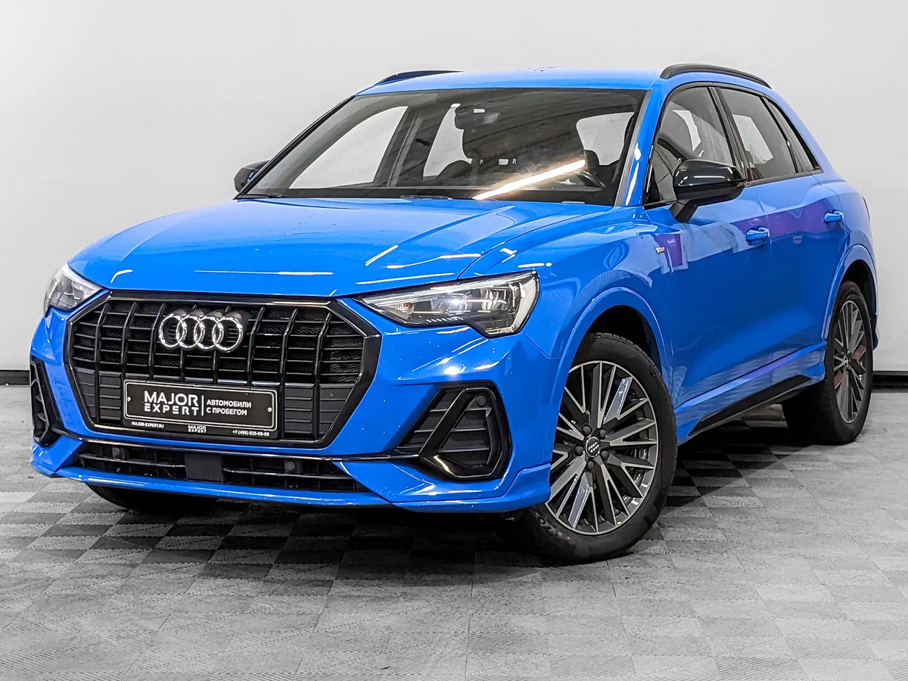
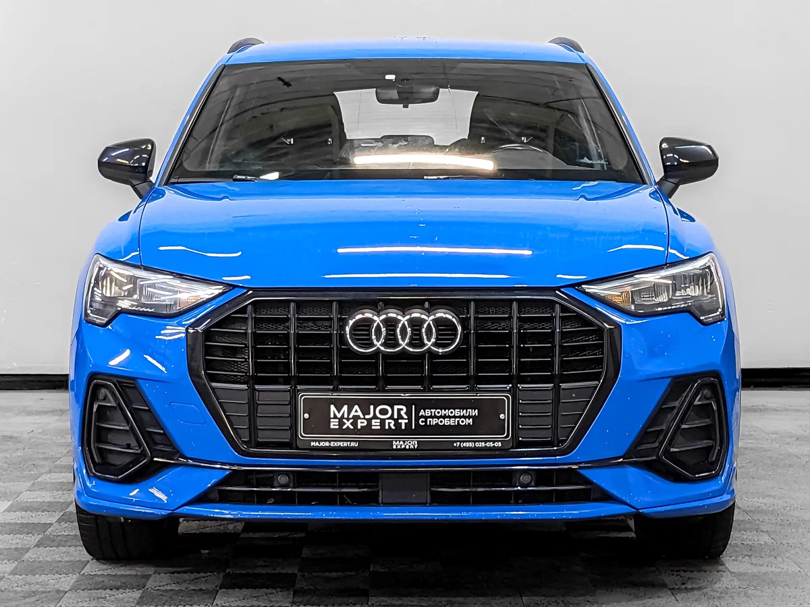
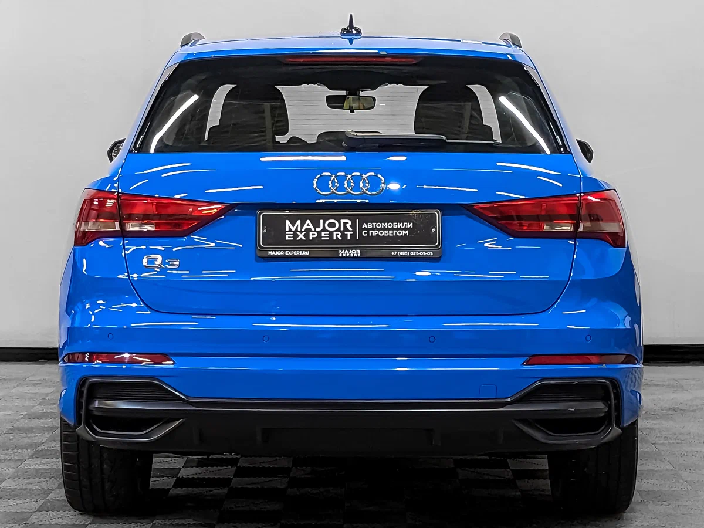

О модели
Audi Q3 F3 — это компактный кроссовер с ярким дизайном, передовыми технологиями и высокими динамическими характеристиками.
Характеристики
Двигатель: 1.5L / 2.0L TFSI
Мощность: 150–310 л.с.
Разгон 0-100 км/ч: 4.9–9.2 сек
Максимальная скорость: 240 км/ч
Дизайн
Спортивный стиль, выразительная передняя решётка, современные LED-фары и высококачественный интерьер с сенсорными дисплеями.
Более подробная информация об этой машине

Нажав по картинке выше, вы можете перейти на сайт и ознакомиться с тем, что не увидели у нас.